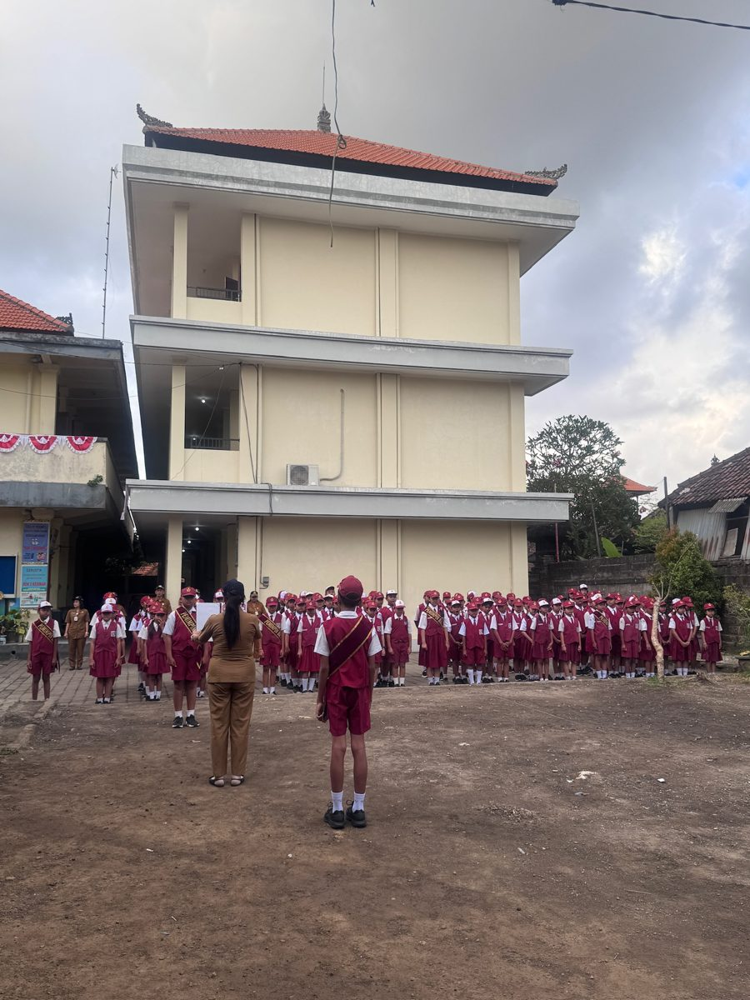
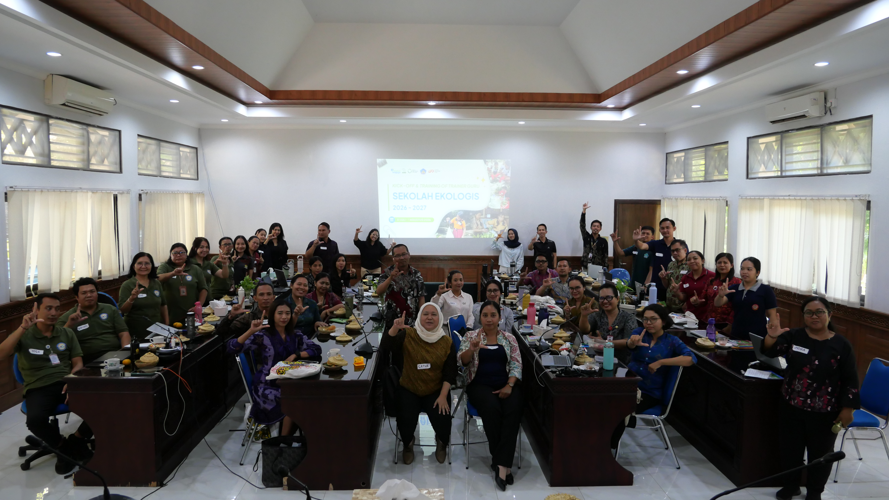

Aa
LiterasiGelis Manis
Menumbuhkan budaya membaca dan menulis melalui pembiasaan literasi yang dekat dengan keseharian peserta didik.
Selengkapnya →
Selamat datang di website resmi
Sekolah berkarakter, berbudaya, aktif, dan bertumbuh bersama.
Sambutan Kepala Sekolah
“Kami berupaya menghadirkan pembelajaran yang bermakna, menanamkan nilai karakter, dan memberi ruang bagi setiap peserta didik untuk berkembang.”
Melalui website ini, sekolah ingin mendekatkan informasi, kegiatan, dan layanan kepada peserta didik, orang tua, serta masyarakat.
Desak Nyoman Sari, S.Pd.SDKepala SD Negeri 3 Kesiman
Baca sambutan lengkapVisi sekolah
SD Negeri 3 Kesiman merupakan satuan pendidikan dasar negeri di Kesiman Kertalangu, Denpasar Timur. Sekolah mengembangkan pembelajaran yang berpusat pada peserta didik, menguatkan literasi dan numerasi, karakter, budaya lokal Bali, kepedulian lingkungan, serta pemanfaatan teknologi.
Lihat profil sekolahProgram unggulan
Beragam program unggulan SD Negeri 3 Kesiman dirancang untuk menghadirkan pengalaman belajar yang bermakna, menyenangkan, serta membangun karakter dan kebiasaan baik peserta didik.
Menumbuhkan budaya membaca dan menulis melalui pembiasaan literasi yang dekat dengan keseharian peserta didik.
Selengkapnya →Menghadirkan pengalaman belajar numerasi melalui permainan yang menyenangkan agar peserta didik semakin percaya diri dan menikmati kegiatan berhitung.
Selengkapnya →Membangun kepedulian terhadap lingkungan melalui kebiasaan mengurangi sampah plastik demi sekolah yang bersih, nyaman, dan berkelanjutan.
Selengkapnya →Membangun kebiasaan positif anak melalui kolaborasi sekolah dan keluarga dengan dukungan jurnal digital.
Buka 7 KAIH →Kabar sekolah

SD Negeri 3 Kesiman memperkuat pendidikan lingkungan melalui Program Sekolah Ekologis 2026–2027.
Baca beritaDua puluh siswa menjadi penggerak budaya peduli lingkungan.
Baca beritaKabar pembelajaran dan kegiatan sekolah akan hadir di sini.
Taman prestasi
Data prestasi belum tersedia. Informasi akan ditampilkan setelah nama, lomba, tingkat, dan pencapaian diverifikasi sekolah.
Buka halaman prestasiRuang tumbuh siswa
Melatih kemandirian, kedisiplinan, dan kerja sama.
Petanque, voli, sepak bola, bulu tangkis, renang, dan catur.
Seni tari, menggambar, seni lukis, dan Bahasa Inggris.
SIMA SQUAD dan E-Sport.
Jadwal dan ketentuan keikutsertaan menunggu konfirmasi sekolah.
Galeri kegiatan

Agenda sekolah
Waktu dan lokasi akan dicantumkan setelah dikonfirmasi.
Pengumuman
Pembaruan penting sekolah akan muncul di bagian ini.
Pendidik kami
Nama dan jabatan menunggu data resmi.
Nama dan jabatan menunggu data resmi.
Nama dan jabatan menunggu data resmi.
Pusat unduhan
Kalender pendidikan, jadwal, formulir, dan dokumen resmi dapat diakses di sini setelah berkas publik tersedia.
Buka pusat unduhanKalender pendidikanBerkas publik belum tersedia
—Formulir sekolahBerkas publik belum tersedia
—Dokumen lainnyaBerkas publik belum tersedia
—Lokasi & kontak